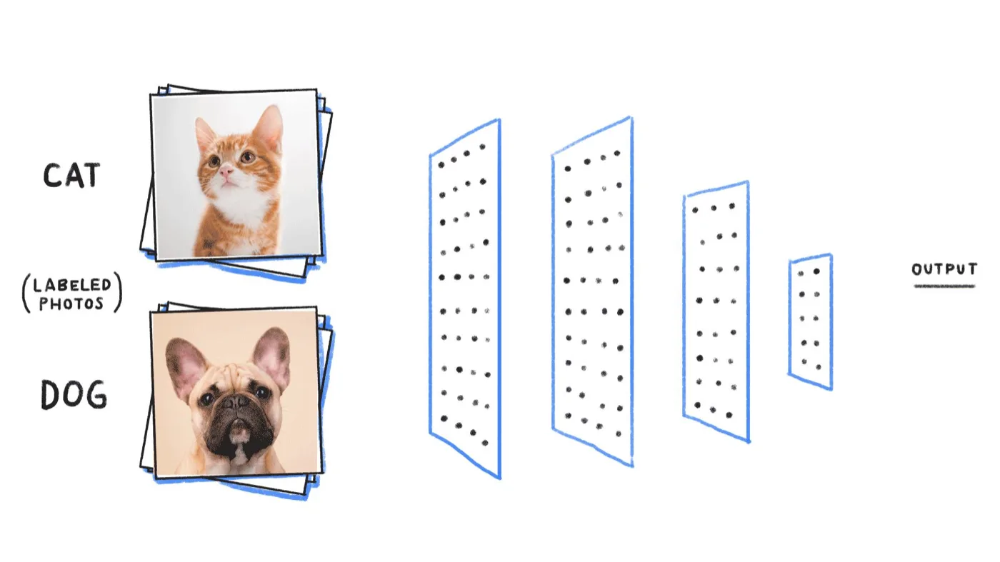
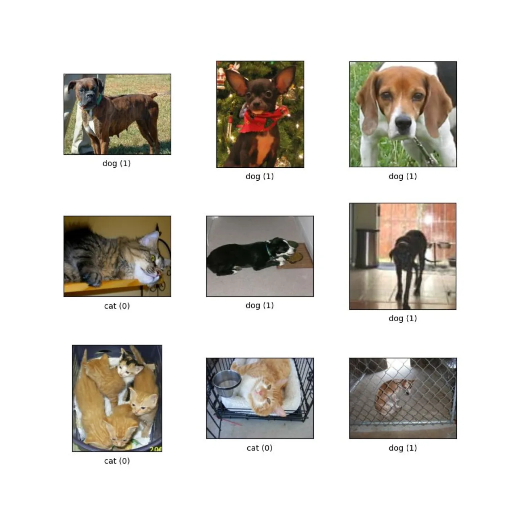
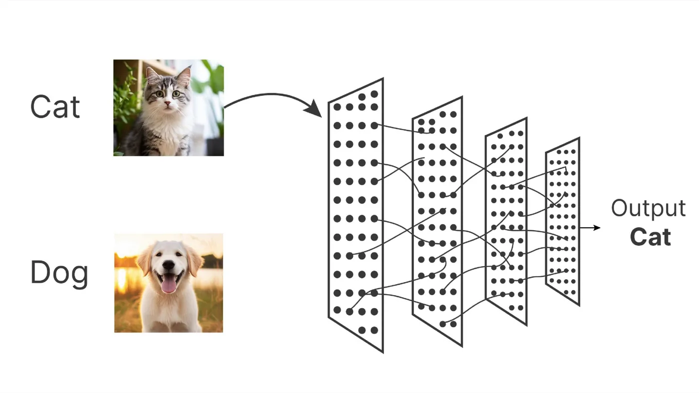
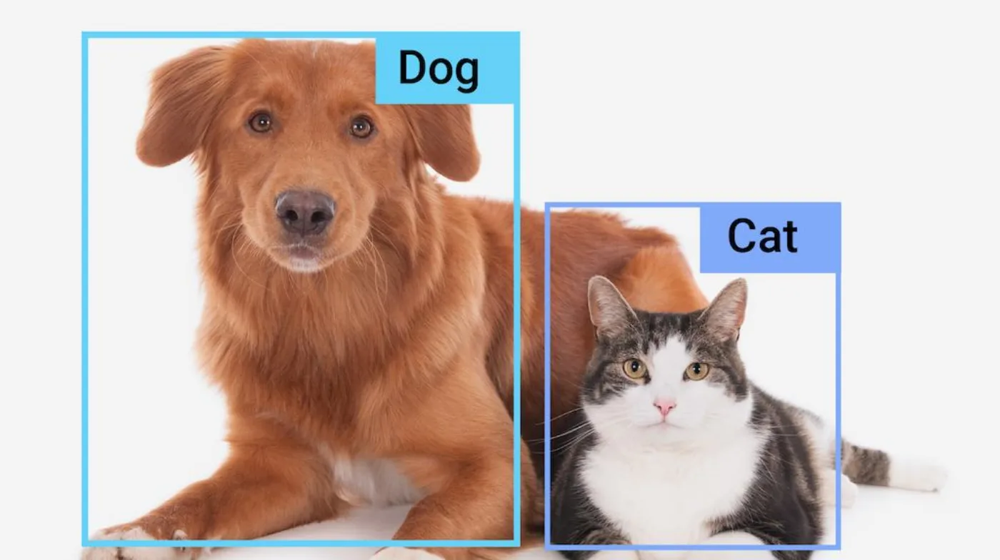

Support 1 sur 7
C'est quoi l'IA générative ?
Ce qu'est un modèle, comment il apprend, et ce qu'on va comparer.
L'IA
C'est quoi l'IA ?
Faire faire à une machine des tâches qui demandent d'ordinaire de l'intelligence humaine.
Une création humaine : des instructions en entrée, un résultat en sortie.
Reconnaître un visage, produire du langage, anticiper la météo.
L'IA
L'IA existait avant
IA

Elle trie, reconnaît, prédit. Traduction, imagerie médicale, prévision météo.
IA générative
Elle produit. Son usage s'est rapidement diffusé depuis le lancement de ChatGPT, fin 2022.
L'entraînement
La recette
Des données

Des textes, des images, avec ce qu'ils représentent.
+ beaucoup de calculs

La machine ajuste ses chiffres jusqu'à retomber sur les bonnes réponses.
= un modèle d'IA

Qui prédit ensuite sur des données qu'il n'a jamais vues.
L'entraînement
Sur quoi s'entraîne un modèle ?
Surtout des pages web, collectées en masse, puis triées avant l'entraînement.
Exemple : carte du jeu de données FineWeb, Hugging Face.
L'entraînement
Un jeu de données type
Exemple : FineWeb.
51 To
de texte, soit 18 500 milliards de jetons.
Carte du jeu de données FineWeb, HuggingFace : le tableau de la carte totalise aujourd'hui 50 447 Go, pour 18 500 milliards de jetons.
L'entraînement
« Apprendre », pour une machine
Un modèle, c'est un empilement de formules. Apprendre, c'est en régler les chiffres, un peu mieux à chaque exemple.
Personne ne les règle à la main : la machine se corrige elle-même, tour après tour.
Le modèle
Ce qu'on obtient au bout
Ni une base de connaissances, ni un moteur de recherche : un ensemble de chiffres qui prédit la suite la plus probable.
Exemple inventé : les mots et la longueur des barres sont fictifs. Ils montrent un classement, pas des valeurs mesurées.
Le modèle
Ces chiffres : les paramètres
compar:IA affiche leur nombre pour les modèles ouverts.
Pour les modèles propriétaires, dont les laboratoires ne publient rien, il n'affiche qu'une classe de taille.
Catalogue des modèles de compar:IA, page /models.
Le duel
L'arène du duel
- Vous posez une question.
- Deux modèles anonymes répondent.
- Vous évaluez les réponses à l'aveugle.
- Les modèles sont révélés, avec le bilan de la discussion.
comparia.beta.gouv.fr